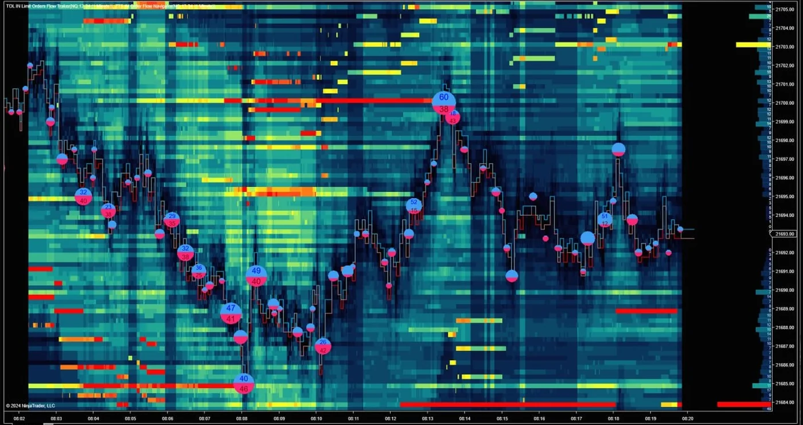
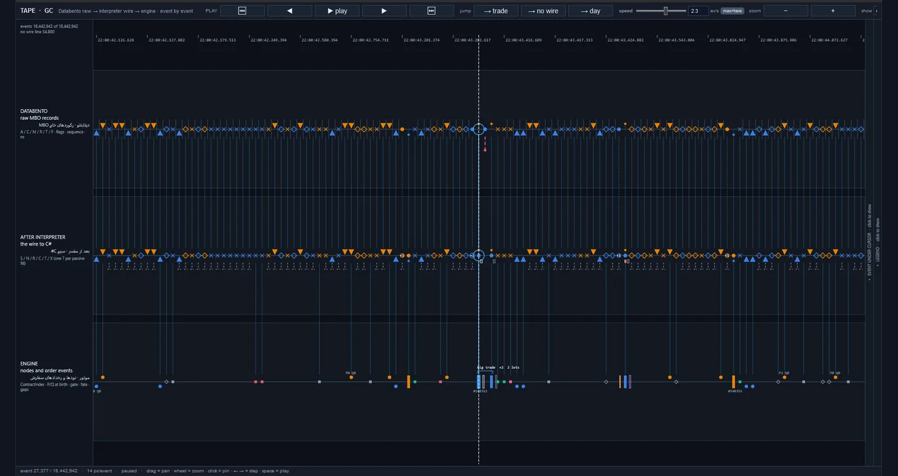
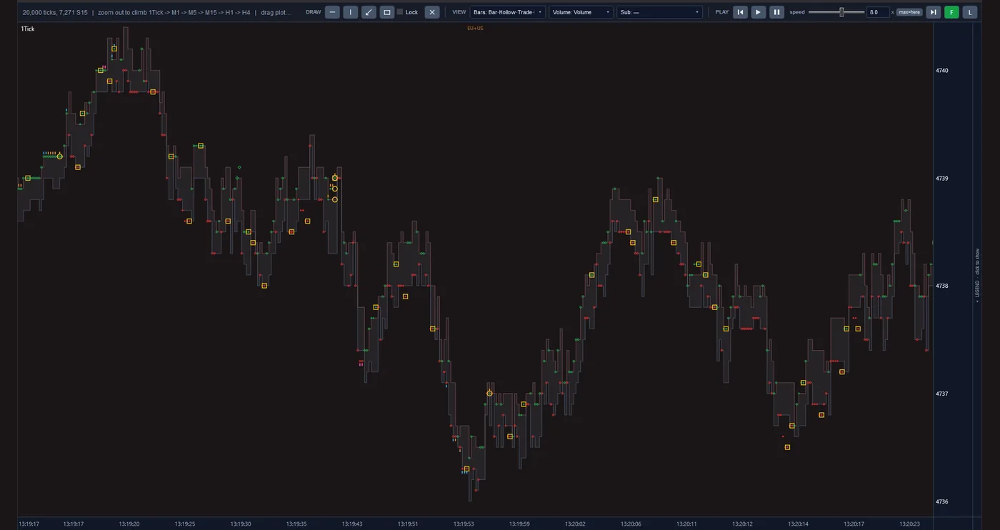

Giriş
Her finansal piyasa sessiz bir varsayıma dayanır: biri almak ya da satmak istediğinde, bir karşı taraf hazırdır. Bu karşı taraf piyasa yapıcıdır: aynı anda hem alış hem satış fiyatı veren, biraz daha ucuza alıp biraz daha pahalıya satan ve bu küçük farkı çok sayıda işlemde tekrarlayarak kazanan bir katılımcı. Fiyatın hangi yöne gideceğini bilmesi gerekmez. Riski, büyük bir hareketin hemen öncesinde yanlış tarafta işlem yapmış olmaktır.
Bu işi, onu piyasanın kendisinden öğrenmiş bir algoritmaya bıraktık.
CME Market Maker projesi, dünyanın en büyük vadeli işlem piyasalarından biri olan Chicago borsasının birkaç yıllık geçmişini her bir emir düzeyinde topladı. Bu veriden, derin öğrenme ve istatistiksel analizle, borsanın kendisinin aslına yakın bir yeniden kurulumu içinde test edilen bir piyasa yapıcılığı algoritmasına ulaştık. Varış noktası, sermayeyi insanların anlık yargısıyla değil, bu algoritmayla yöneten otomatik bir piyasa yapıcılığı masasıdır.
Simülatör raporları
Bu projenin, emir gerçekleşme simülatöründen alınmış, her piyasa için bir tane olmak üzere iki tam raporu var. Her rapor algoritmayı aynı anda 25 senaryoda gösterir: emrin borsaya ulaşmasında sıfırdan bir milisaniyeye kadar beş gecikme seviyesi, beş komisyon seviyesinde. İkisini de indirebilir, bizden bağımsız olarak okuyup değerlendirebilirsiniz.
-
GC Altın vadeli işlemleri
- Ara 2019 – Tem 2026test dönemi
- 1.608işlem günü
- 1.905.921temel senaryoda simüle edilen işlem
- 25 senaryo5 gecikme seviyesi × 5 komisyon seviyesi
Kendi kendine yeten tek bir HTML dosyası, 7,4 MB, Farsça ve İngilizce
-
NQ Nasdaq-100 vadeli işlemleri
- May 2017 – Haz 2026test dönemi
- 2.310işlem günü
- 2.792.780temel senaryoda simüle edilen işlem
- 25 senaryo5 gecikme seviyesi × 5 komisyon seviyesi
Kendi kendine yeten tek bir HTML dosyası, 8,0 MB, Farsça ve İngilizce
Bunlar, kaydedilmiş piyasa verisi üzerindeki simülasyon sonuçlarıdır (geriye dönük test, backtest); gerçek alım satım değildir ve geleceğe dair bir garanti değildir. Her rapor zarar eden senaryoları da gösterir.
Platformun içinden
Bunlar temsili görseller değil, projenin araçlarından alınmış gerçek ekranlardır. Her görünüm, aynı emir emir piyasa verisini farklı bir açıdan gösterir. Büyütmek için görsele tıklayın.



Her fiyatta ve her anda bekleyen emirlerin hacmi bir ısı haritası olarak, üzerinde fiyat yolu ve işlemleri işaretleyen baloncuklar.
Tek tek adımlanabilen 18.442.942 olay, üç şeritte: ham MBO kayıtları, aynı kayıtların yorumlayıcıdan sonraki hâli ve motorun içindeki düğümler ile emir olayları.
Her tick üzerinde olay işaretçileri bulunan bir tick’lik fiyat grafiği. Uzaklaştırıldıkça görünüm tick’lerden bir dakikaya ve dört saate kadar çıkar.
Yaklaşım
Algoritma piyasa verisinden öğrenir ve aynı piyasanın bir yeniden kurulumu içinde ölçülür. Çalışma üç aşamada yapıldı:
-
Ham veriden piyasanın tam resmine
İşlem ekranı piyasanın yalnızca bir özetini gösterir. Biz borsanın kaydettiği her mesajı işliyor ve bekleyen emirlerin listesini her an için yeniden kuruyoruz. Sonuç, her fiyatta ne kadar hacmin beklediğini ve emirlerin kuyrukta hangi sırayla durduğunu gösteren bir resimdir.
-
Piyasanın resminden algoritmaya
Derin öğrenmede bilgisayar, elle yazılmış kuralları izlemek yerine örüntüleri gerçek örneklerden öğrenir. Algoritmamız bu yolla ve istatistiksel analizin desteğiyle, bir piyasa yapıcının işleminin hangi durumlarda lehine, hangi durumlarda aleyhine sonuçlandığını öğrendi. Çıktısı üç karardır: emrin nereye yerleştirileceği, hangi işlemden kaçınılacağı ve ne zaman kenara çekilineceği.
-
Algoritmadan test edilmiş emir gerçekleştirmeye
Doğru bir karar, gerçek piyasada da uygulanabilir olmalıdır. Simülatörümüzde algoritmanın emirleri, tıpkı gerçekte olacağı gibi, borsaya gecikmeyle ulaşır, kuyrukta sırasını alır ve piyasayı etkiler. Ölçüt, tüm maliyetlerden sonraki net finansal sonuçtur.
Öne çıkanlar
-
İnsanların kafasında değil, sistemde yaşayan bilgi.
Geleneksel piyasa yapıcılığı, usta trader’ların sezgisine yaslanır ve bu bilgi onlar ayrıldığında kaybolur. Algoritmamız bildiklerini piyasa verisinin kendisinden öğrendi. Bu bilgi kayıtlıdır, tekrarlanabilir ve yeniden eğitilebilir.
-
Piyasada sürekli bulunmak değil, seçicilik.
Seçici olmayan çift taraflı kotasyonu gerçek maliyetle ölçtük ve zarar etti; çünkü seçmeyen bir piyasa yapıcı çoğunlukla fiyat tam aleyhine hareket etmek üzereyken işlem yapar. Algoritmanın değeri tam da buradadır: hangi işlemin isteneceğini, hangisinden uzak durulacağını ayırt etmek.
-
Emir gerçekleştirmede de geçerliliğini koruyan bir sonuç.
Birçok strateji kâğıt üzerinde kârlıdır, pratikte değil; çünkü testleri bir emrin ekranda görünen fiyattan hemen gerçekleştiğini varsayar. Simülatörümüzde bir emir, gerçek piyasadakiyle aynı yolu izler; simülasyonun doğruluğu da borsanın ham verisinden yapılan bağımsız bir yeniden kurulumla karşılaştırılarak denetlendi.
-
Gerçek bir bulguyu tesadüften ayırmak.
Öğrenme modelleri, gelecek hakkında hiçbir şey öğrenmeden geçmişi ezberleyebilir. Bunu önlemek için algoritma her zaman, çalkantılı olanlar dahil, eğitimde görmediği dönemler üzerinde ölçülür. Ayrıca her bulgu, anlamlı her türlü örüntüden kasıtlı olarak arındırılmış veriyle yan yana konur; orada da ortaya çıkıyorsa elenir.
-
Altyapı ihtiyacını, parasını ödemeden önce bilmek.
Bu alanda kâr ile zarar arasındaki çizgiyi, bir emrin borsaya ulaşma hızı ve her işlemin komisyonu belirler; ikisinden herhangi birini iyileştirmek de pahalıdır. Algoritmayı bu koşulların bir dizisinde aynı anda test ediyoruz. Böylece herhangi bir finansal taahhütten önce, planın hangi koşullarda savunulabilir olduğu açıktır.
-
Standart, okunabilir raporlama.
Her testin sonucu, sektörün alışılmış göstergeleri ve adlandırmalarıyla, hem Farsça hem İngilizce olarak tek bir sayfada sunulur. Bir yatırımcı ya da danışmanı, sonucu bizden bağımsız olarak okuyup değerlendirebilir.
Önümüzdeki yol
-
Tamamlandı
Veri altyapısı, piyasanın yeniden kurulumu, piyasa yapıcılığı algoritması, emir gerçekleşme simülatörü ve raporlama sistemi kuruldu.
-
Şu anda
Bugün algoritmayı çok yıllık bir testte, farklı hız ve komisyon koşullarında ve birden fazla piyasada ölçüyoruz.
-
Sırada
Ardından canlı veriye bağlantı, borsaya yakın konumda kurulum ve sınırlı sermayeyle bir deneme dönemi gelecek.
-
Son adım
Son adım, otomatik bir masa olarak gerçek sermayeyle piyasa yapıcılığıdır.
Teknoloji
Öğrenme modelleri Python ile kurulur ve bir grafik işlemcide eğitilir. Piyasa yeniden kurulum motoru ve emir gerçekleşme simülatörü C# ile, ham veri okuyucu ise Rust ile yazıldı. Bir değişiklik, ancak önceki sürümle karşılaştırıldıktan ve otomatik testlerden geçtikten sonra kabul edilir.